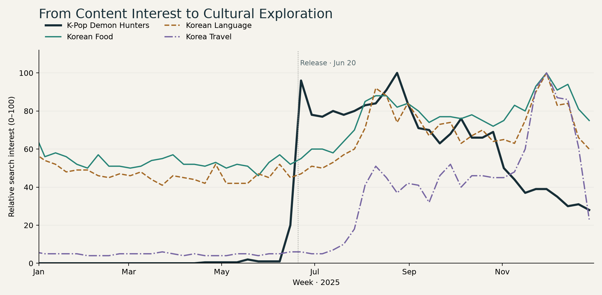
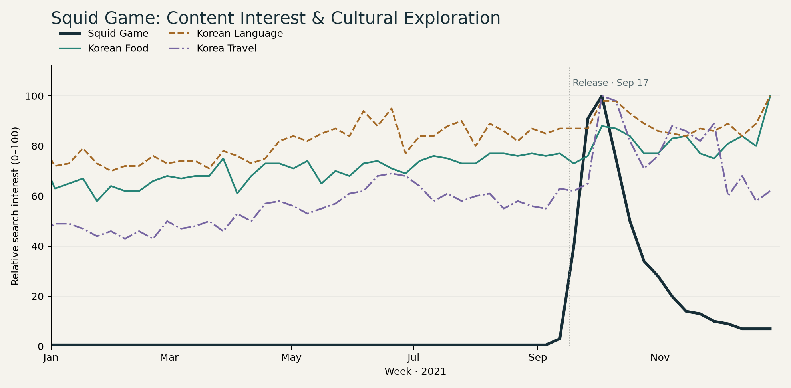

Thumbnail source: Netflix Tudum · Official film introduction image. Artwork belongs to the respective rights holders; my role is described below.
K-Pop Demon Hunters · Explore the evidence
My role: project concept, data collection and preprocessing, time-series analysis and a rule-based framework. Teammates performed comment statistical analysis; we developed interpretations and recommendations together.

Each series is independently normalised. Compare timing and patterns, not absolute search volume. Source: worldwide weekly Google Trends data; values below 1 shown as 0.5.
View the Squid Game comparison

Each series is independently normalised. Compare timing and patterns, not absolute search volume. Source: worldwide weekly Google Trends data; values below 1 shown as 0.5.
Different years and contexts; this is not a controlled comparison. The charts show source search patterns, not phase classifications from the rule-based framework.
Business question
How does engagement with K-content connect with interest in food, language and travel?
Grand Prize Winner · KNOU Data Analysis Competition
From Analysis to Marketing Recommendations
Based on the observed gap between content interest and cultural searches, we proposed preparing follow-up cultural and tourism promotions alongside content launches, then refining their timing as audience interest developed. We also recommended adapting the approach to each title’s attention pattern rather than using a fixed campaign schedule.
Methodology & interpretation
What the data supports
Saved cross-correlation results peak at +6 weeks for food (r = 0.871), +7 for language (r = 0.846), and +7 for travel (r = 0.815). These are exploratory associations—not proof of visits, purchases or a universal campaign window.
131,580 top-level comments were collected across languages. The supplied preprocessed file contains 78,436 rows: 55,193 classified as English and 23,243 as unknown. This corrects inconsistent sample descriptions in earlier portfolio material.